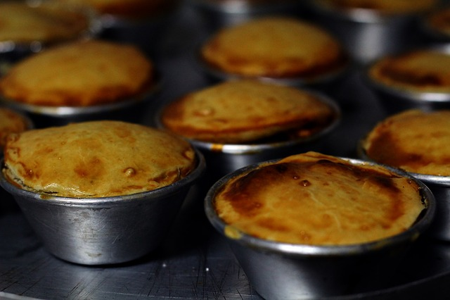

Empadinhas

Receita de empadinhas
Ingredientes
- 1 kg de farinha
- 500g de margarina
- Sal
- 1 kg de filé de peito
- 2 latas de creme de leite
- Requeijão
- Cebola
- Tomate
- Pimentão
Modo de preparo
- Num recepiente misturar a farinha de trigo com a Margarina
até obter uma consistência de areia molhada
- Numa panela dore a cebola, depois coloque o frango até que fique dourado
- Sal
- Com o frango bem dourado jogue o tomate e pimentão
- Deixe refogando numa temperatura média
- Colocar o creme de leite e o requeijão
- Depois disso só montar as empadinhas
Informaçãoes adicionais
Essas empadas com um café ficam perfeitas